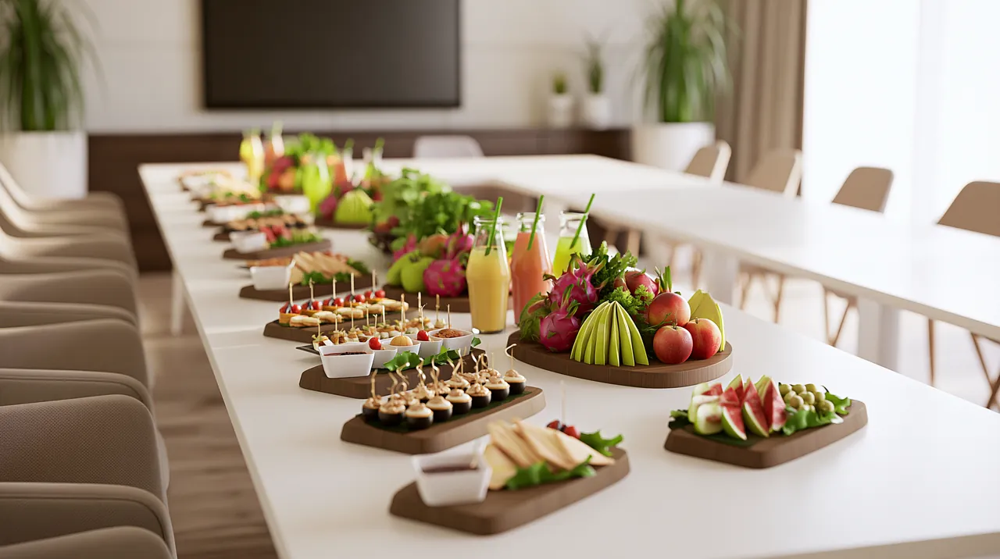

20 sierpnia 2021
Eventy

Dlaczego catering na konferencji ma znaczenie?
Catering to element konferencji, który uczestnicy zapamiętują – i to zarówno pozytywnie, jak i negatywnie. Źle zaplanowane przerwy na jedzenie obniżają energię sali, powodują kolejki i frustrację. Dobrze przygotowany catering utrzymuje koncentrację uczestników, tworzy przestrzeń do networkingu i buduje profesjonalny wizerunek organizatora.
Co powinno znaleźć się w menu konferencyjnym?
Przerwa kawowa (coffee break)
- Kawa i herbata – podstawa. Różne rodzaje, w tym opcje bezkofeinowe.
- Woda – niegazowana i gazowana, łatwo dostępna przez cały czas.
- Świeże owoce – jabłka, banany, winogrona, sezonowe jagody. Energia bez ciężkości.
- Lekkie przekąski – mini kanapki, croissanty, muffiny.
Lunch konferencyjny
- Format stojący – finger food, pozwala na swobodne krążenie i networking.
- Różnorodność diet – zawsze uwzględnij opcje wegetariańskie, wegańskie i bezglutenowe.
- Świeżość – sałatki, warzywa, owoce jako przeciwwaga dla cięższych dań.
Zasada 80/20: 80% lekkiego, zdrowego jedzenia + 20% indulgencji (ciasto, czekolada). Uczestnicy czują się zaopiekowani bez poczucia winy.
O czym musisz pamiętać przy planowaniu?
- Ilość porcji – planuj 1,2-1,5 porcji na osobę (nie wszyscy jedzą, ale ci co jedzą, biorą więcej).
- Timing – przerwy co 90-120 minut. Główna przerwa na lunch minimum 45 minut.
- Alergeny – oznacz wszystkie dania. Pytaj uczestników z wyprzedzeniem o diety specjalne.
- Zrównoważony wybór – unikaj wyłącznie ciężkich dań – po takim lunchu nikt nie słucha prezentacji.
Zamów catering konferencyjny
W DailyFruits specjalizujemy się w cateringu eventowym dla firm. Przygotowujemy zestawy na konferencje, warsztaty i szkolenia – od przerw kawowych po pełne menu lunchowe. Wszystko ze świeżych, sezonowych produktów.
← Wróć do wszystkich artykułów